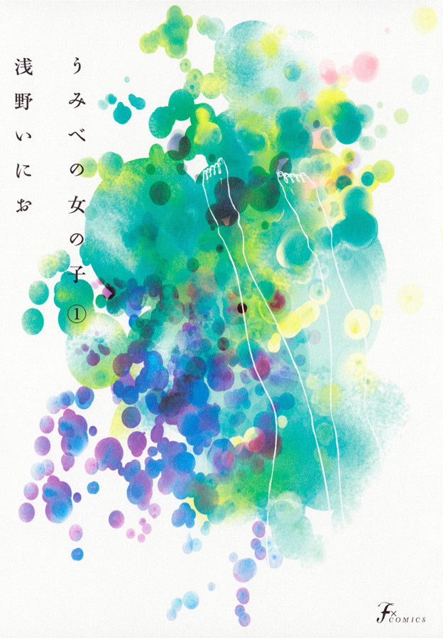
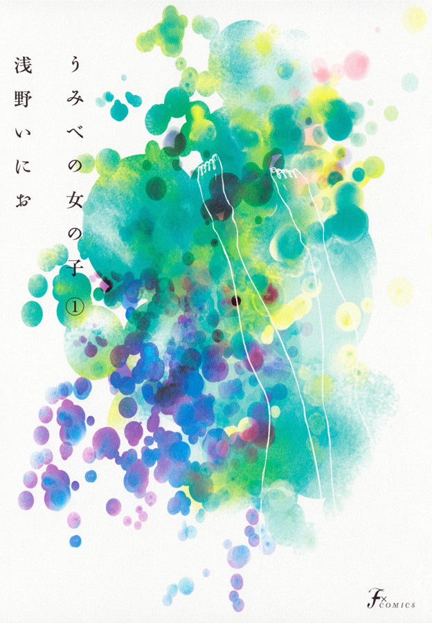

Beatrice Tribucias
I’m a 20-year-old BSIT-MWA student at National University MOA, with a solid foundation in STEM from senior high. I’ve been a consistent first honor student since Grade 1—valedictorian in Grade 6 and first honors throughout elementary and high school. I’m passionate about web design and development and always eager to grow my skills across both front-end and back-end technologies.
 
